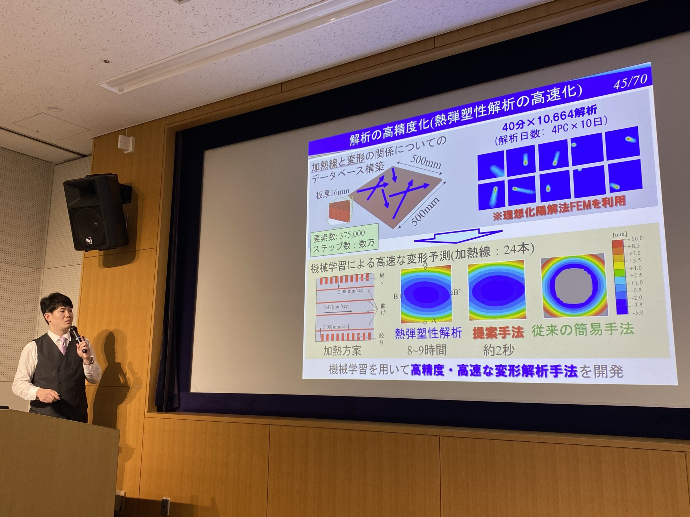
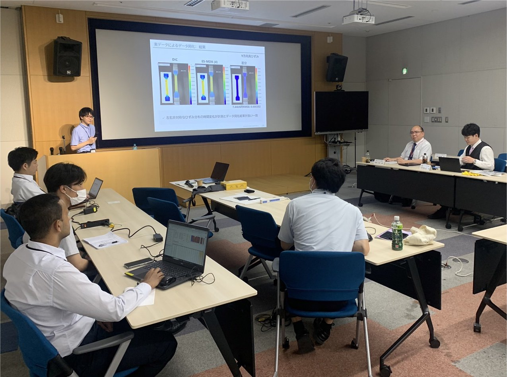
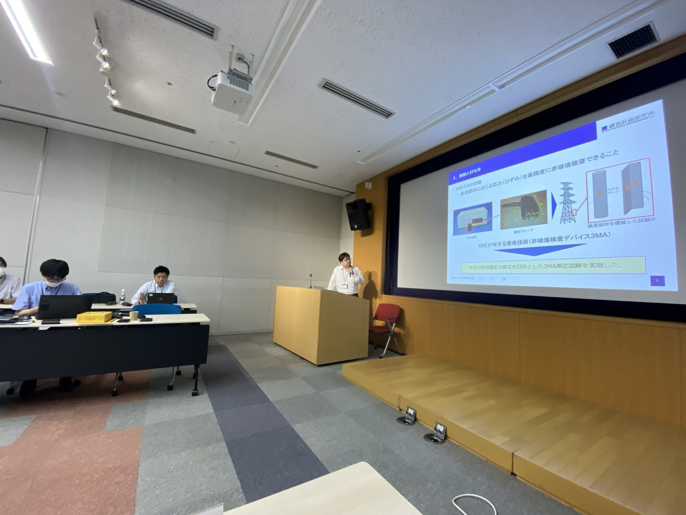
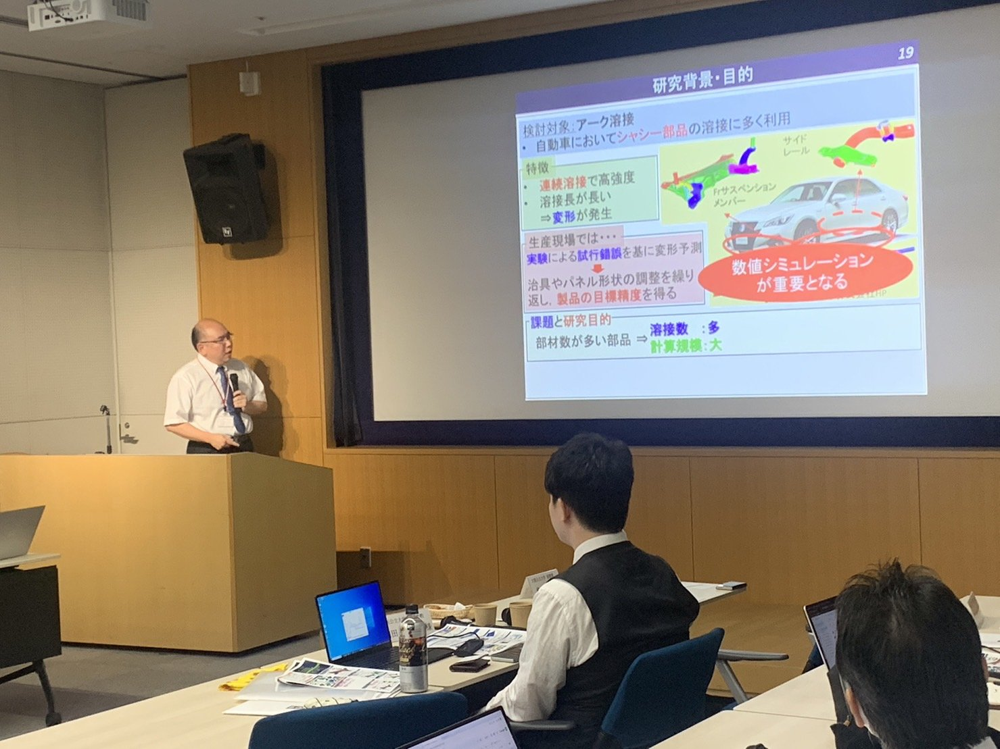

TOPICS
2023年8月25日
- 報告
(株)構造計画研究所と柴原研究室とのワークショップを開催し、柴原先生および前田新太郎特任助教が登壇しました。
ワークショップでは、(株)構造計画研究所からデータ同化および3MAと呼ばれる新しい応力計測装置に関する講演が行われ、柴原研究室側からは、柴原先生が理想化陽解法を用いた大規模解析および熱場・力学場のデジタルツインについて講演されました。また、前田先生からは、NEDO_AI線状加熱、NEDO_発電プラントデジタルツイン、AIを用いた溶接順序最適化 等のご講演がなされました。
詳細は以下の通りです。
ーーーーーーーーーーーーーーーーーーーーーーーーーーーーーーーーー
大阪公立大学柴原研究室＆構造計画研究所(KKE)ワークショップ
2023年8月25日
13:10-14:00 KKEの事例紹介1（発表者：綿引壮真様）
・データ同化の高速化に関する取り組み
・圧縮センシングによる振動計測事例
14:00-14:45 KKEの事例紹介2（発表者：上谷佳祐様）
・3MAを用いた鉄塔部材の残留応力計測事例
休憩 15分
15:00-16:00 柴原研究室の研究紹介1（発表者：柴原正和准教授)
・理想化陽解法FEMおよびデータ同化についての事例紹介
16:00-17:00 柴原研究室の研究紹介2（発表者：前田新太郎特任助教)
・データ同化、製造シミュレーションおよびAIによる最適化事例紹介
ーーーーーーーーーーーーーーーーーーーーーーーーーーーーーーーーー



